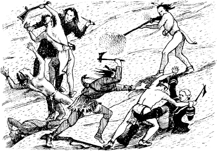
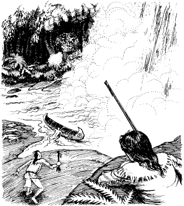
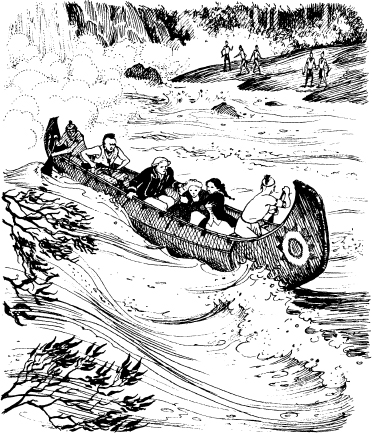

3
格蘭瀑布的戰鬥
隔天一大早，鷹眼就把鄧肯叫醒。
「我們得走了，」他說「我去拿獨木舟。叫醒科拉小姐跟艾莉絲小姐。不過，小聲一點。」
鄧肯走到山洞後方。「科拉、艾莉絲，」他輕聲說「醒醒。」
突然間，外面傳來叫喊聲和哭喊聲。鄧肯趕緊奔到山洞前面。森林裡傳來槍聲，河的另一邊有許多印地安人。
「休倫族！」鄧肯心想。
鄧肯接著看到鷹眼。這個偵察兵從平坦的石頭上朝他們射擊。鄧肯看見一名休倫族人墜落激流中。其他休倫族人則逃回森林裡。
鷹眼回到山洞裡。「他們逃走了，」他說。
「他們還會回來嗎？」鄧肯問。
「會，他們會回來的，」鷹眼回答「科拉小姐跟艾莉絲小姐必須待在山洞裡。我們一起去岩石後面等休倫族人。」

鄧肯、鷹眼、安卡斯跟欽加庫克拿著槍，躲在瀑布附近一處岩石後面，靜靜地等待著。好幾分鐘過去了，一個小時過去了。
突然間，他們又聽到休倫族人發出野蠻的叫聲。四個印地安人從平坦的石頭上衝向山洞。欽加庫克跟安卡斯舉起槍射擊。第一個跟第二個休倫族人倒在地上。第三個休倫族人跳到鷹眼身上。他們兩人手上都拿著刀子，不過鷹眼比那個休倫族人強壯，最後成功用刀子殺死了他。

第四個休倫族人跟鄧肯打鬥。安卡斯趕緊跑來協助軍官。這個年輕的莫希干族人殺死了那個休倫族人。然後，安卡斯跟鄧肯跑回岩石後面。
河另一邊的休倫族人又開始射擊，欽加庫克也朝他們射擊。
槍聲持續不斷。山洞附近的石頭跟樹木都被打壞了無數的地方，不過鷹眼跟他的朋友都沒受傷。科拉跟艾莉絲則安然無恙地待在山洞裡。
鷹眼看到河對岸一棵樹上有一個休倫族人。這個偵察兵舉起他長長的槍，發射出去。有人發出慘叫，那個印地安人從樹上掉下來。
「我的子彈沒了，」鷹眼說「安卡斯！去獨木舟那邊找子彈，獨木舟上有一些。」
安卡斯很快地越過平坦的石頭。可惜他來不及了。有一個休倫族人正把獨木舟推過河。

「我們現在該怎麼辦？」鄧肯問。
鷹眼思考了幾分鐘。「路上一定會有人把守，」他說「休倫族人會監視每條路。我們必須游過去。我們必須跳進河裡。激流會把我們帶到休倫族人的前面去。」
這個偵察兵看向科拉跟艾莉絲。
「我們不會游水，」科拉說「艾莉絲和我會留下來。你們去找威廉亨利堡的孟若將軍。孟若將軍一定要派士兵過來。」
欽加庫克、安卡斯跟鷹眼小聲地討論著。接著，欽加庫克衝出山洞，跳進河裡。一會兒後，鷹眼放下他的長槍，也跟著欽加庫克跳下去。激流把他們帶走了。

「我留下來，」這個年輕的莫希干族人說。
「不行！」科拉說「拜託你，安卡斯。你跟他們一起去！」
安卡斯有點失望，不過他最後還是跳進水裡。
科拉看向鄧肯。
「我打算留下來，」鄧肯說。他看向艾莉絲「我不能丟下你。」
平坦的石頭上傳來休倫族人的叫喊聲。鄧肯往山洞外看。
休倫族人正在瀑布附近的岩石後面搜尋。
「他們在找我們，」鄧肯心想。他立刻回到山洞裡。
「我們的同伴很快就會帶援軍過來了，」他對科拉跟艾莉絲說。
科拉很害怕。她的臉色發白。她大聲尖叫。
鄧肯轉過身，他看到馬瓜那張可怕的臉！
「莫希干族人在哪裡？」馬瓜問「偵察兵鷹眼，長槍，在哪裡？」
突然間，山洞裡擠滿了休倫族人。其中一個人拿起鷹眼的槍。
「他們走了，」鄧肯說「他們很快就會帶援軍來了。」
休倫族人很生氣。他們準備殺死他們的俘虜。不過馬瓜跟他們講了話，很快又很安靜。接著，休倫族人把鄧肯、科拉跟艾莉絲帶到平坦的石頭上。其中一個休倫族人把獨木舟帶來。
「上獨木舟！」馬瓜說。
鄧肯跟兩位姊妹上獨木舟。馬瓜跟休倫族人把他們載過河。

他們在河的另一邊上了岸。馬瓜跟五個休倫族人留下來，其他休倫族人則走向森林裡。